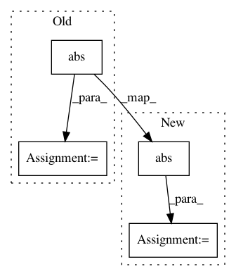

0b03930bc47e60c880412883fc8f27035bd5a00f,main.py,Model,build,#Model#,263
Before Change
s_mixed_signals = tf.reduce_sum(
s_src_signals, axis=1)
s_src_signals_log = tf.log1p(tf.abs(s_src_signals))
s_mixed_signals_phase = tf.atan2(
tf.imag(s_mixed_signals), tf.real(s_mixed_signals))
s_mixed_signals_power = tf.abs(s_mixed_signals)
s_mixed_signals_log = tf.log1p(s_mixed_signals_power)
// int[B, T, F]
// float[B, T, F, E]
s_embed = encoder(s_mixed_signals_log)
s_embed_flat = tf.reshape(
s_embed,
[hparams.BATCH_SIZE, -1, hparams.EMBED_SIZE])
// TODO make attractor estimator a submodule ?
if hparams.TRAIN_ESTIMATOR_METHOD == "truth":
with tf.name_scope("attractor"):
s_src_assignment = tf.argmax(s_src_signals_log, axis=1)
s_indices = tf.reshape(
s_src_assignment,
[hparams.BATCH_SIZE, -1])
fn_segmean = lambda _: tf.unsorted_segment_sum(
_[0], _[1], hparams.MAX_N_SIGNAL)
// float[B, C, E]
s_attractors = tf.map_fn(
fn_segmean, (s_embed_flat, s_indices), hparams.FLOATX)
elif hparams.TRAIN_ESTIMATOR_METHOD == "anchor":
estimator = hparams.get_estimator(
"anchor")(self, "train_estimator")
s_attractors = estimator(s_embed)
using_same_method = (
hparams.INFER_ESTIMATOR_METHOD ==
hparams.TRAIN_ESTIMATOR_METHOD)
if using_same_method:
s_valid_attractors = s_attractors
else:
s_valid_attractors = hparams.get_estimator(
hparams.INFER_ESTIMATOR_METHOD)("infer_estimator")(s_embed)
s_separated_signals_log = do_separation(
s_mixed_signals_log, s_attractors, s_embed_flat)
if using_same_method:
s_separated_signals_log_valid = s_separated_signals_log
else:
s_separated_signals_log_valid = do_separation(
s_mixed_signals_log, s_valid_attractors, s_embed_flat)
// loss and SNR for training
s_train_loss, v_perms, s_perm_sets = ops.pit_mse_loss(
s_src_signals_log, s_separated_signals_log)
s_perm_idxs = tf.stack([
tf.tile(
tf.expand_dims(tf.range(hparams.BATCH_SIZE), 1),
[1, hparams.MAX_N_SIGNAL]),
tf.gather(v_perms, s_perm_sets)], axis=2)
s_perm_idxs = tf.reshape(
s_perm_idxs, [hparams.BATCH_SIZE*hparams.MAX_N_SIGNAL, 2])
s_separated_signals_log =tf.gather_nd(
s_separated_signals_log, s_perm_idxs)
s_separated_signals_log = tf.reshape(
s_separated_signals_log, [
hparams.BATCH_SIZE,
hparams.MAX_N_SIGNAL,
-1, hparams.FEATURE_SIZE])
s_mixed_signals_phase = tf.expand_dims(s_mixed_signals_phase, 1)
s_separated_signals_pwr = tf.expm1(s_separated_signals_log)
s_separated_signals = tf.complex(
tf.cos(s_mixed_signals_phase) * s_separated_signals_pwr,
tf.sin(s_mixed_signals_phase) * s_separated_signals_pwr)
s_train_snr = tf.reduce_mean(ops.batch_snr(
s_src_signals, s_separated_signals, is_complex=True))
// ^ for validation / inference
s_valid_loss, v_perms, s_perm_sets = ops.pit_mse_loss(
s_src_signals_log, s_separated_signals_log_valid)
s_perm_idxs = tf.stack([
tf.tile(
tf.expand_dims(tf.range(hparams.BATCH_SIZE), 1),
[1, hparams.MAX_N_SIGNAL]),
tf.gather(v_perms, s_perm_sets)],
axis=2)
s_perm_idxs = tf.reshape(
s_perm_idxs, [hparams.BATCH_SIZE*hparams.MAX_N_SIGNAL, 2])
s_separated_signals_log_valid_pit = tf.gather_nd(
s_separated_signals_log_valid, s_perm_idxs)
s_separated_signals_log_valid_pit = tf.reshape(
s_separated_signals_log_valid_pit, [
hparams.BATCH_SIZE,
hparams.MAX_N_SIGNAL,
-1, hparams.FEATURE_SIZE])
s_separated_signals_pwr_valid = tf.expm1(
s_separated_signals_log_valid_pit)
s_separated_signals_pwr_infer = tf.expm1(
s_separated_signals_log_valid)
s_separated_signals_valid = tf.complex(
After Change
s_mixed_signals = tf.reduce_sum(
s_src_signals, axis=1)
s_src_signals_pwr = tf.abs(s_src_signals)
s_src_signals_log = tf.log1p(s_src_signals_pwr)
s_mixed_signals_phase = tf.atan2(
tf.imag(s_mixed_signals), tf.real(s_mixed_signals))
s_mixed_signals_power = tf.abs(s_mixed_signals)
s_mixed_signals_log = tf.log1p(s_mixed_signals_power)
// int[B, T, F]
// float[B, T, F, E]
s_embed = encoder(s_mixed_signals_log)
s_embed_flat = tf.reshape(
s_embed,
[hparams.BATCH_SIZE, -1, hparams.EMBED_SIZE])
// TODO make attractor estimator a submodule ?
if hparams.TRAIN_ESTIMATOR_METHOD == "truth":
with tf.name_scope("attractor"):
s_src_assignment = tf.argmax(s_src_signals_log, axis=1)
s_indices = tf.reshape(
s_src_assignment,
[hparams.BATCH_SIZE, -1])
fn_segmean = lambda _: tf.unsorted_segment_sum(
_[0], _[1], hparams.MAX_N_SIGNAL)
// float[B, C, E]
s_attractors = tf.map_fn(
fn_segmean, (s_embed_flat, s_indices), hparams.FLOATX)
elif hparams.TRAIN_ESTIMATOR_METHOD == "anchor":
estimator = hparams.get_estimator(
"anchor")(self, "train_estimator")
s_attractors = estimator(s_embed)
using_same_method = (
hparams.INFER_ESTIMATOR_METHOD ==
hparams.TRAIN_ESTIMATOR_METHOD)
if using_same_method:
s_valid_attractors = s_attractors
else:
s_valid_attractors = hparams.get_estimator(
hparams.INFER_ESTIMATOR_METHOD)("infer_estimator")(s_embed)
s_separated_signals_pwr = do_separation(
s_mixed_signals_power, s_attractors, s_embed_flat)
if hparams.DEBUG:
_s_masks = _g_masks
if using_same_method:
s_separated_signals_pwr_valid = s_separated_signals_pwr
else:
s_separated_signals_pwr_valid = do_separation(
s_mixed_signals_power, s_valid_attractors, s_embed_flat)
In pattern: SUPERPATTERN
Frequency: 4
Non-data size: 4
Instances
Project Name: khaotik/DaNet-Tensorflow
Commit Name: 0b03930bc47e60c880412883fc8f27035bd5a00f
Time: 2017-08-09
Author: junkkhaotik@gmail.com
File Name: main.py
Class Name: Model
Method Name: build
Project Name: librosa/librosa
Commit Name: 7474beb8e6f97ccad01bfe3cc60a299fe3ffec7c
Time: 2019-08-18
Author: brian.mcfee@nyu.edu
File Name: librosa/beat.py
Class Name:
Method Name: plp
Project Name: mariogeiger/se3cnn
Commit Name: 23bb353a6ab85d7ea03c06a2ccfa7d91e2f078d3
Time: 2019-08-05
Author: geiger.mario@gmail.com
File Name: se3cnn/util/plot.py
Class Name:
Method Name: plotly_sphere
Project Name: scikit-video/scikit-video
Commit Name: 14a7c84fa56c32eb7f4bbe057ce118cbff6ce8fd
Time: 2016-11-16
Author: tgoodall@utexas.edu
File Name: skvideo/measure/scene.py
Class Name:
Method Name: _scenedet_intensity